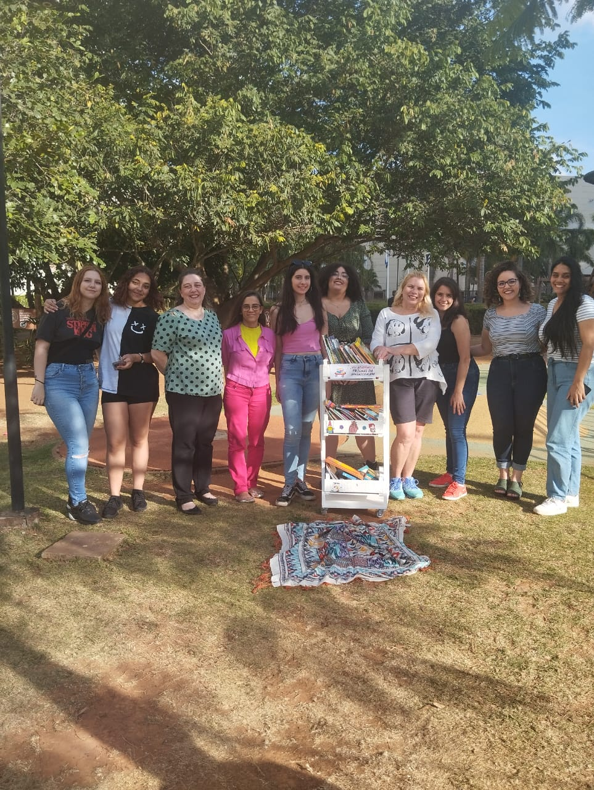
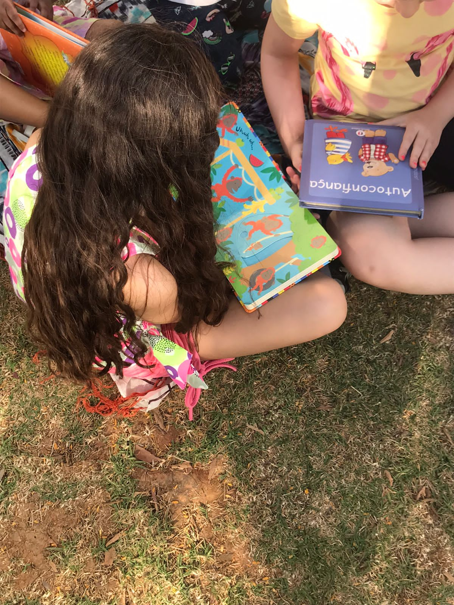

Apresentação
Aqui falamos um pouco sobre o que é o projeto

A Liga Acadêmica Trilhas da Aprendizagem (LATA) da Faculdade de Pedagogia da Universidade Municipal de São Caetano do Sul - USCS, no munícipio de São Caetano do Sul, São Paulo, Brasil, é uma entidade extensionista, científica e sem fins lucrativos, de duração ilimitada
O nome da Liga Acadêmica Trilhas da Aprendizagem foi criado através do pensamento sobre o caminho de aprendizados e conquistas que o ser humano faz ao longo das suas experiências de vida. E através das intervenções mediadas, cada pedagogo ou estudantes de pedagogia tem intenção de criar meios para modificar os espaços e o aprendizado de cada criança. Lembrando que as crianças são sujeitos de direito, sócio-culturais, a Trilha de aprendizagem traz intervenções culturais e tem intenção de servir de agentes transformadores através de pequenas ações dentro da comunidade envolvida.
As trilhas de aprendizagem são sequências estruturadas de atividades e conteúdos educacionais projetadas para guiar os estudantes em seu processo de aquisição de conhecimento e habilidades. Elas permitem um aprendizado contínuo e progressivo, adaptando-se às necessidades individuais dos alunos e promovendo sua autonomia. As trilhas organizam os conteúdos de forma lógica e coerente, oferecem feedback contínuo e muitas vezes utilizam tecnologias digitais. Aplicáveis tanto na educação básica quanto na formação corporativa e no ensino superior, elas aumentam o engajamento, a eficiência e a inclusão no processo educativo. (SESI, 2022). Quando falamos em Vygotsky, podemos pensar exatamente nisso, como nós professores podemos ver o que o aluno já sabe, para chegar aonde queremos que ele chegue. Chamando de zona de de desenvolvimento proximal, são as funções que ainda não amadureceram, mas estão em processo de maturação, função de amadurecimento mais cedo ou mais tarde (MARQUES, 2007).
Desta forma, a trilha da aprendizagem podemos entender como algo que a criança ainda não aprendeu, mas com o tempo, atividades e ajuda dos profissionais e familiares, ela pode chegar até a sua meta, desenvolver a sua socialização e poder mostrar a sua cultura durante a sua trajetória.
Dito isso, as atividades pensadas para este semestre foram reforçar a brincadeira no parque, algo que já estava acontecendo no semestre passado. E ao mesmo tempo, para não se distanciar tanto da literatura infantil, a Liga pensou em unir a brincadeira e o folclore, trazendo às crianças um pouco de curiosidades sobre os personagens e suas aventuras inserida nos contos da cultura brasileira.
Quando pensamos em cultura, ela é composta por manifestações que abrangem as crenças, valores, costumes, arte e tecnologia de uma região de um país e de uma comunidade. Com o processo de globalização, as manifestações culturais passam a aglutinar-se em apenas uma única cultura, inserida em uma sociedade voltada ao consumo. Massificam-se os produtos, brinquedos e consequentemente as brincadeiras. As crianças passam mais tempo dentro de casa usando jogos eletrônicos e acessando redes sociais, muitas vezes limitados do convívio social dos amigos e vizinhos.